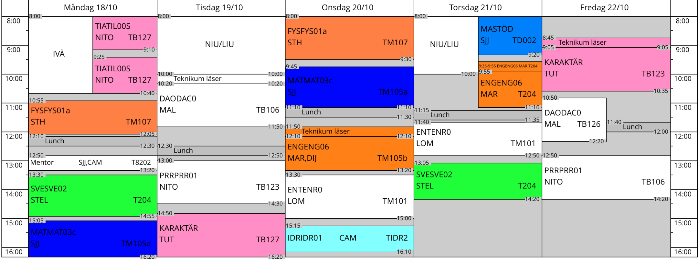

Hibba Hindawi
Allmän Information
Jag heter Hibba Hindawi och jag är en flicka som är född 2004, 26 Juli. Jag har flera intressen och gillar att göra olika saker som att till exempel bygga saker och att vara kreativ. Jag försöker också göra några projekt med hjälp av mina kunskaper från min nurvarande skola Teknikum
Vad jag brukar göra
Min dag brukar börja med att jag vaknar och går till skolan i några timmar där jag pluggar teknik. Jag har en specifik schema att följa och specifika ämnen som är tillgänglig till bara min inriktning. Jag gillar mest Webbutveckling och programmering eftersom jag kan vara mest kreativ där.
Mitt schema består utav flera olika lektioner och mycket att göra hemma.
- Tillämpad Programmering
- Detta är mitt IVÄ (Individuellt Valt Ämne), lektionerna handlar främst om hur man programmerar en arduino med hjälp av c++ kod. Vi brukar göra småa projekt och testa olika komponenter som en temperatur sensor eller en ljud sensor.
- Fysik
- På Fysik så brukar vi räkna och lösa olika problem som har med gravitation och andra osynliga saker att göra.
- Svenska
- I Svenska brukar vi skriva texter och läsa olika romaner som vi sedan behöver besvara med hjälp av några frågor.
- Matte
- I Matte så löser vi flera olika typer of problem som inkluderar nummer, bokstaver och ibland flera diagram.
- Dator och Nätverks Teknik
- I Dator och Nätverks Teknik brukar vi läsa på en websida som heter cisco, vad den handlar om är data komponenter och hur de fungerar. Syftet med detta är att vi ska lära oss vad en data är uppbyggd utav men också för att själv kunna använda kunskaperna senare.
- Webbutveckling
- Detta är lektionen där jag gör flesta av mina projekt, vi skapar webbsidor och arbetar med det. Språken vi använder är HTML, CSS och Javascript.
- Programmering
- I Programmering brukar vi programmera olika saker som till exempel en gissa nummer spel vilket jag har gjort förrut.
- Engelska
- I Engelska så lär vi oss att prata Engelska och använda bra grammatik. Vi brukar läsa flera texter och skriver mycket.
- Entreprenörskap
- I Entreprenörskap håller vi på att skapa våra egna företag, vi ska komma på en produkt och sälja den.
- Idrott
- I Idrott brukar vi leka flera spel men för flesta dels rör vi oss ganska mycket.
Mitt Schema:
När jag kommer hem så brukar jag antingen jobba med mina uppgifter eller så testar jag runt mig lite i programmering för att se vad jag kan göra. Än så länge har jag lyckats göra två saker helt själv, en egen webbsida som är mer ett skämt än en webbsida, och ett gissa tal spel där programmet väljer ett tal mellan 1 och 100, som användaren måste gissa.
Information om mig och min familj
Jag heter Hibba Sandra Hindawi och jag har gått på Ringsbergskolan ända tills 9:an (10 år) och nu går jag mitt andra år i Teknikum. Jag har fortfarande ett år till i Teknikum och sen ska jag gå på Universitet i 3-5 år beroende på vilken linje jag väljer. Jag bor just nu med mina föräldrar, min mamma och pappa, jag har tre syskon som har alla flyttat ut och skaffat sina familjer. Just nu har jag ingen drömjobb men jag tror jag ska bli en webbutvecklare eftersom jag är ganska bra på det redan och för att jag tycker att det är väldigt roligt, inte bara att lära sig utan att använda sig av det. När jag gör webbsidor så känns det som om jag kan vara hur kreativ som helst och utmana mig själv till att skapa mina idéer.